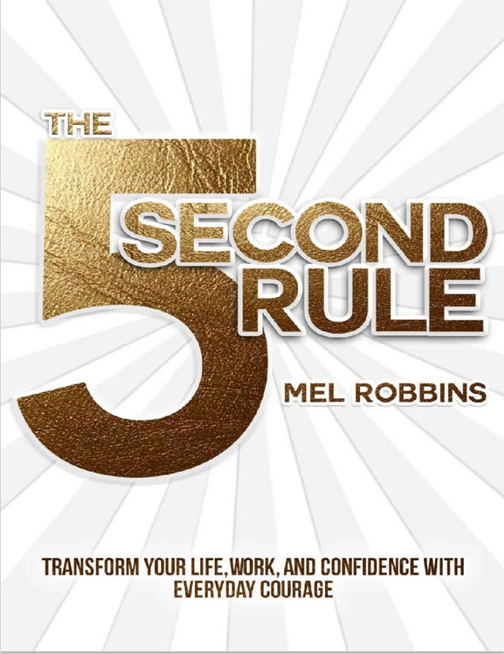

Book Analysis: The 5 second Rule by Mel Robbins

About Author
Mel Robbins, a native of Kansas City, initially embarked on her professional journey as a criminal defense attorney. Over time, she transitioned into various roles including entrepreneur, life coach, and a prominent commentator on popular television programs like Dr. Phil and Oprah. Her expertise and insights have garnered international recognition, leading her to become a sought-after speaker, host of the syndicated talk show The Mel Robbins Show (which was later discontinued), and a bestselling author.
Throughout her career, Mel Robbins has demonstrated versatility and a keen ability to connect with audiences across different platforms. Her experiences as a lawyer have undoubtedly shaped her approach to coaching and public speaking, allowing her to offer unique perspectives and valuable advice to her followers. Despite the cancellation of her talk show, Robbins continues to inspire and empower individuals through her work, leaving a lasting impact on those who seek her guidance in navigating life's challenges.
About Book
Prior to the liftoff of a rocket, a countdown takes place. Similarly, individuals can initiate their own push moment to combat inertia. This idea gave rise to the concept of the #5SecondRule, which may already be unconsciously implemented in various ways. Mel elaborates on the #5SecondRule, its functionality, and the diverse applications it offers through real-life illustrations.
There are anecdotes of the many people who have used the 5 seconds rule and made positive changes to their lives. Unfortunately, they are presented in the format she received them, often posts and Tweets, which makes them hard to read at times in a print book.
Apart from anecdotes, Mel also included some historical events like the story of Rosa Parks & Martin Luther King Jr. which is the base of one of the greatest civil rights movements in the world.
Another interesting thing that I came to know about is the positive side of procrastination, so feeling good that I’m procrastinating on few things like writing a book as it will give me ample amount of time to my creative mind to come up with some fantastic stories.
Ultimately, this will instill in us a sense of bravery, requiring us to push aside our tendency to overthink and make swift decisions, ideally within a timeframe of around 5 seconds; otherwise, our minds will conjure up countless justifications to avoid taking action.
Amazing quotes from the book
- Every single day we face moments that are difficult, uncertain, and scary. Your life requires courage. And that is exactly what the Rule will help you discover—the courage to become your greatest self.
- Only through action have I unlocked the power inside of me to become the person that I’ve always wanted to be.
- No matter how bad your life can seem, you can always make it worse.
- When it comes to goals, dreams, and changing your life, your inner wisdom is a genius. Your goals related impulses, urges, and instincts are there to guide you. You need to learn to bet on them.
- We are amazing at fooling ourselves into staying exactly where we are.
- None of us realize it, but we make almost every single decision not with logic, not with our hearts, not based on our goals or dreams—but with our feelings.
- Parkinson’s Law—work expands to whatever time you give it.
- It’s okay to be scared. Being scared means you’re about to do something really, really brave.
- Physiologically anxiety and excitement are the exact same thing. The only difference between excitement and anxiety is what your mind calls it.
- Confidence in yourself is built through acts of everyday courage.
Bonus
“Never left anything unsaid”
This was one of the biggest takes away from the book. Below conversation between Mel and her father about the news of his surgery is related to above phrase and here I got too emotional and even cried.
“Dad, are you scared?”
There was silence on the other end. And I started to regret asking the question. I was not expecting to hear what he said next: “I’m not scared. I am nervous, but I really trust my surgeon. You know, Mel, I actually feel kind of lucky.” “Lucky?” That’s not what I expected to hear. “Yes, I have an opportunity to try and fix this thing before it kills me. And at the end of the day if something happens, I have no regrets. Watching my mom take care of my dad after his stroke or watching Susie die of ALS was horrible. Quality of life is very important to me. And the quality of my life has been more than I could have ever wished for. As a kid I always wanted to be a doctor, and I became one. Your mom and I have had a wonderful life together. You and your brother turned out. I’ve basically done exactly what I wanted to do with my life. And that’s all you can ever ask for…that and more time to enjoy it.
It was one of the most beautiful moments I have ever shared with my dad and without the #5SecondRule, I wouldn’t have found my courage to ask the question.
And then he added this: “Actually, there is one thing I want to do,” he said, “I’d like to see Africa. And if I make it to 90, I want to jump out of plane like George H. Bush did on his 90th birthday.” I laughed. “You will dad, you will.”